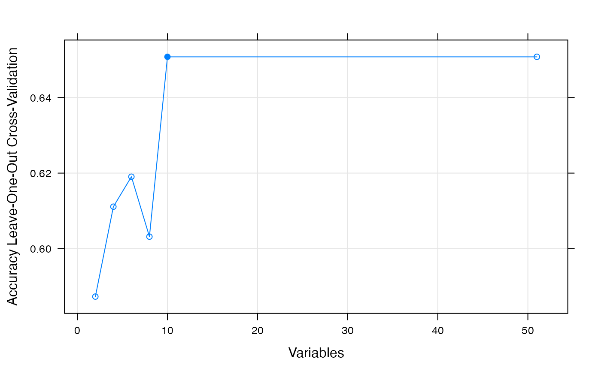
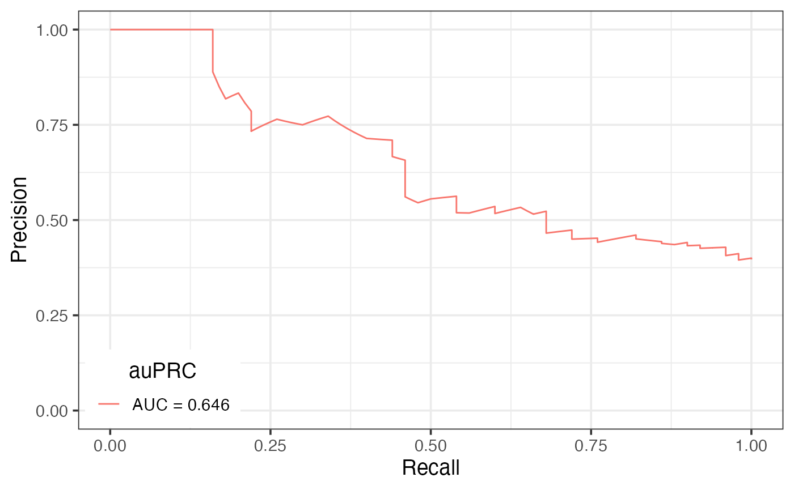
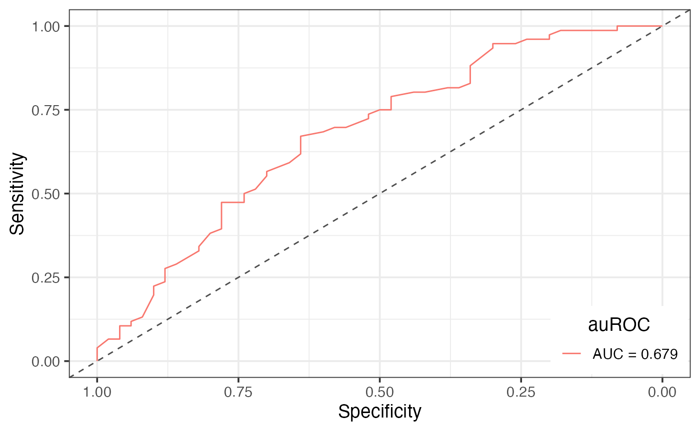

vignettes/MAPD.Rmd
MAPD.RmdAbstract
Targeted protein degradation (TPD) has rapidly emerged as a therapeutic modality to eliminate previously undruggable proteins by repurposing the cell’s endogenous protein degradation machinery. However, development of TPD compounds is largely driven by trial-and-error. Recent systematic studies to map the degradable kinome have shown dramatic differences in degradation between kinases with similar drug-target engagement, suggesting unexplained factors influencing degradability. We therefore developed a machine learning model, MAPD (Model-based Analysis of Protein Degradability), to predict degradability from protein features that encompass post-translational modifications, protein stability, protein expression and protein-protein interactions. MAPD shows promising performance in predicting kinases that are degradable by TPD compounds (auPRC=0.759) and is likely generalizable to independent non-kinase proteins. We found 5 features to achieve optimal performance, with ubiquitination potential being the most highly predictive. By structural modelling, we found that E2-accessible ubiquitination sites, but not lysine residues in general, are particularly associated with kinase degradability. Here, we implement the R package MAPD, which enable users to re-train the MAPD model and predict proteome-wide degradability.
BiocManager::install(c("caret", "doParallel", "pROC", "PRROC"))
devtools::install_github("WubingZhang/MAPD")
# Load feature data
data("featureDat", package = "MAPD")
# Load kinases for training
data("ProteinsForTrain", package = "MAPD")
# You can also load your own data.
# featureDat: a matrix or a data frame, each row represents a gene/protein, each column represents a feature.
# ProteinsForTrain: a factor or a vector, specifying genes/proteins with high or low degradability for training the model. The names of the `ProteinsForTrain` should match the row names of `featureDat`.
# Parallel Processing
cl <- makePSOCKcluster(4)
registerDoParallel(cl)
# define the control using a random forest selection function
control <- rfeControl(functions=rfFuncs, method = "LOOCV")
# run the RFE algorithm
results <- rfe(featureDat[names(ProteinsForTrain), ], ProteinsForTrain,
sizes=seq(2,10,2), rfeControl=control)
# summarize the results
print(results)##
## Recursive feature selection
##
## Outer resampling method: Leave-One-Out Cross-Validation
##
## Resampling performance over subset size:
##
## Variables Accuracy Kappa Selected
## 2 0.5873 0.08797
## 4 0.6111 0.17921
## 6 0.6190 0.19317
## 8 0.6032 0.14169
## 10 0.6508 0.23930 *
## 51 0.6508 0.21695
##
## The top 5 variables (out of 10):
## Ubiquitination_2, Zecha2018_Hela_Halflife, Mathieson2018_Hepatocytes_Halflife, TyrRatio, Nterminome
stopCluster(cl)
# In the MAPD manuscript, we used forward feature selection and seleted five important features for predicting degradability, including Ubiquitination_2, Phosphorylation_2, Acetylation_1, Length, Zecha2018_Hela_Halflife
# Using default setting: built-in feature data and pre-selected features
cl <- makePSOCKcluster(4); registerDoParallel(cl) # Parallel Processing
MAPD = MAPD.train(class = ProteinsForTrain) # ntree = 20000## 2021-08-25 19:51:44 Features used for training: Ubiquitination_2, Phosphorylation_2, Acetylation_1, Zecha2018_Hela_Halflife, Length## 2021-08-25 19:51:44 126 proteins and 5 features are included in the training data## 2021-08-25 19:51:44 Start training ...## note: only 4 unique complexity parameters in default grid. Truncating the grid to 4 .## 2021-08-25 20:01:34 Return the final model ...
# You can also use the optimal feature set selected by rfe (recursive feature elimination) in previous step.
# To make it fast, we train a random forest model with 100 trees.
MAPD = MAPD.train(class = ProteinsForTrain, features = results$optVariables, ntree = 100)## 2021-08-25 20:01:34 Features used for training: Ubiquitination_2, Zecha2018_Hela_Halflife, Mathieson2018_Hepatocytes_Halflife, TyrRatio, Nterminome, Phosphorylation_2, Ubiquitination_1, MOLT4_RNA, nInteract, Boisvert2012_Hela_Cytoplasm_Turnover## 2021-08-25 20:01:34 126 proteins and 10 features are included in the training data## 2021-08-25 20:01:34 Start training ...## 2021-08-25 20:01:42 Return the final model ...
stopCluster(cl) # Close the parallel cluster
# You can load pre-trained model using:
# data("MAPD", package = "MAPD")
cl <- makePSOCKcluster(8); registerDoParallel(cl) # Parallel Processing
# To make it fast, we did 5-fold cross validation in the document.
prc = MAPD.CV(MAPD, metric = "PRC", fold = 5) # Precison-Recall Curve
PRC.plot(prc)
roc = MAPD.CV(MAPD, metric = "ROC", fold = 5) # ROC Curve## Setting levels: control = high, case = low## Setting direction: controls > cases
ROC.plot(roc)
stopCluster(cl) # Close the parallel cluster
# You can load pre-trained model using:
# data("MAPD", package = "MAPD")
cl <- makePSOCKcluster(4); registerDoParallel(cl) # Parallel Processing
# Predict proteome-wide degradability
preds = predict.train(MAPD, newdata = featureDat, type = "prob")
preds = preds[order(-preds[,1]), ]
head(preds)## high low
## AURKB 0.99 0.01
## GRB2 0.98 0.02
## GSK3B 0.98 0.02
## CDK2 0.96 0.04
## CDK1 0.95 0.05
## PBK 0.95 0.05
# Collect predictions from cross-validation
preds_cv = MAPD.CV(MAPD, out = "pred")
head(sort(preds_cv, decreasing = TRUE))## CDK9 CDK2 GSK3B AURKB CDK16 TTK
## 0.95 0.92 0.91 0.90 0.84 0.83